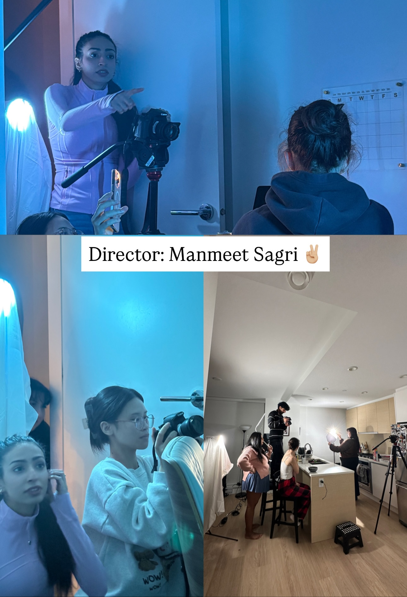

About Me



Hi, I'm Manmeet Sagri, a Front-End Developer and UX Designer at SFU SIAT, crafting digital experiences where intentional design and clean code work together.
I am the passionate friend in the room who gets excited about every new feature drop, every interface refresh, and every tool that just shipped. That enthusiasm for emerging technology and human-centered design is what drives how I think, prototype, and build.
My work spans interaction design, creative coding, and front-end development. From game systems built in Java to responsive web interfaces designed in Figma and coded in HTML and CSS, I care deeply about usability, visual hierarchy, and the reasoning behind every design decision.
Outside of studio and screen, I enjoy photography, cycling, and have recently gotten into hiking. I am drawn to experiences that push me somewhere new, in design and in life.
Actively seeking internships where I can bring my skills into the real world and keep learning from people building things that matter.
View My Resume